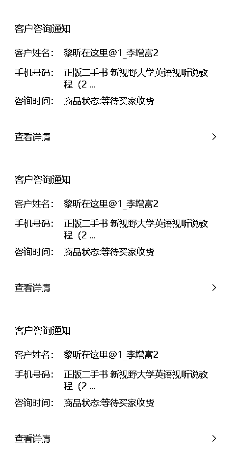

来源：https://r2rmt6mopc.feishu.cn/docx/BXOtdGMhBooERgx8qGscVS42nPe
大家好，我是搞钱界的修(技)仙(术)人——华少，加入生财已经3年了。
之前一直默默潜水，看着各位大佬分享，直到链接了生财的二手书一哥老瞿Qu，看着他做二手书年入百万，但这个项目却较为繁琐，感受到老瞿Qu的痛苦，于是决定做老瞿Qu背后的男人，用技术手段让老瞿Qu实现快乐的年入百万。
同时本人也在2022年12月份第一时间，办理了6个出版物许可证，开通了18个闲鱼二手书帐号，开启了躺平式的月入2W的闲鱼卖二手书之路。
本人精通JavaScript，Java，PHP，Python，C#，JavaScript，Swift，Kotlin，TypeScript，Rust，Swift等100多门开发语言环境的搭建。
能以最优雅的方式双击打开VScode，Eclipse，IntelliJ IDEA，Android Studio，PyCharm，WebStorm，Visual Studio等99款开发软件。
路上小妹妹找我问路常叫我爷爷，其实今年也就18多点。
……
好了，不开玩笑了了，下面言归正传。
一、相识篇：想通过二手书赚钱
2022年6月，之前一直在做的项目，从最初日利润八九千掉到一千不到了，内心略带焦虑。
于是加入过挺多的知识星球，长长见识，看看各路大佬是怎么赚钱的，拓展思路，渐渐的发现好像看生财一个星球就够了，于是乎每天网上躺在床上都要刷一会生财。
2022年6月20日深夜，在床上辗转反侧，在无聊之时星球弹出一条老瞿QU写的推送《二手书拆解》，平平无奇的标题却吸引了我的注意。
因为之前一直都在开发校园社区Saas系统，小程序里面学生可以自由发布二手书，线上支付，校内线下交易，但这种模式下，平台没利润，一直想接入第三方二手书的接口，销售二手书给学生，赚个差价。
链接了大佬，几天的交流以及对行业的深入研究后，发现二手书的品类实在太多了，即使是大学教材版本也非常的多，很难实现当初构想的那样一个人一键低价购买所需的所有图书，最终学生还得这个平台买几本，那个平台买几本，才能凑齐所要的书籍。
加上所需要的运营成本，各项投入，模式过重，所以果断放弃，转而做无货源的闲鱼二手书。
为什么选闲鱼二手书无货源呢？
1、模式足够轻，自建仓库，那就太累了，搬仓库，管理员，客服，收书，卖书，全流程自己把控，是某种程度上更好，自己能更好的把控品质，但那投入的资金人力很可能就把自己搞死了。
2、客单价很低，用户决策成本就会很低，应该不需要多少客服的投入，如果像电子产品，就得应对一大堆的客户咨询，后来实践来看还是有不少的客户会先咨询再下单，大部分都是随便问几句：宝贝在不在，几成新 ，在哪发货，几天能到，都很固定，都是估计的模板回答话术。
不过那时候闲鱼图书品类并未开放，想要入局，只能等，期间各方搜寻资料，也顺利混入了官方群，希望能第一时间得到一手消息。
终于在年底的时候，闲鱼开放白名单内测，我第一时间拿到了申请的入口，现在已经完全开放了，只要有出版物经营许可证就可以申请。
二、相知篇：闲鱼二手书的痛点，原来大家都一样
虽然我拿到了闲鱼二手书的资质，但这玩意真的很费时间精力，上书，客服，发货，售后，对于一个加班加到死的程序员而言，每个环节都很要命。
操作几天后，实在是容忍不了，按这种方式，毫无疑问最终我肯定会放弃。
于是我再次找到老瞿Qu，老瞿给我的回复是：
你说的二手书这些痛点，我也都有。首先我觉得二手书这个项目之所以成立，就是因为他相对繁琐，导致闲鱼二手书没有太大的玩家带资本进场，才能让小白赚点钱。其次我的工作室上书、客服、订单处理都有雇人去做了，流水线操作，我自己基本上不怎么参与了。
总之一句话，大佬就是觉悟高，凡尔赛。
但如果闲鱼二手书项目都有这样的痛点的话，那我作为一个神仙级程序员，我可以做点什么呢？怎么样才能实现躺赢？
说干就干，自此开启了一段程序员式升级打怪之路。
第一步：搞定上书（累）
闲鱼二手书不像淘宝京东那样，需要美工精修每一张图片，说白了我们就是一群帮运工，把孔夫子上面比较好看的实拍图搬运到闲鱼，利用信息差，中间赚个差价。
在直接点，这是个苦力活。
但对于程序员而言，这可无法容忍。
研究一番后，在闲鱼官方合作的闲管家后台找到了API文档，这就简单了。
花了四五天时间，把孔夫子上热销图书全部抓取下来，共采集了60万本图书，6000万张实拍图，并结合闲管家的API，完成上书软件的开发。
原来人工一个小时上架20-30本书，现在通过系统一个小时可以上架100-200本书。
现在上书省去了很多无用功，把所有的精力放在选品上。

第二步，搞定订单（乱）
闲鱼因为平台的机制原因，流量分配的比较均匀，对新人比较友善，但缺点就是，单店铺很难实现爆单，为了从平台更好的获利，最好的方式就是多账号批量运营。
因为闲鱼的流量是免费的，多账号的本质就是多占坑位，薅平台流量。
我身边做的好点的小伙伴基本都是十几个账号打底的，多的30个账号，100个账号也比比皆是。
最终就会导致账号订单混乱不堪，有退货的订单在哪个账号上都很难找到，所以我又开发了订单系统。实现了一键同步收货地址到孔夫子，一键下单，自动同步孔夫子的快递单号，自动发货。
同时也实现了来订单以后，微信服务号提醒，一是避免错过一些订单，更重要的是，每次看到微信提醒：老板，开单了，瞬间又有了继续奋斗的激情，毕竟正反馈对任何一个做项目的人来说都是特别重要的。
第三步：搞定客户咨询（烦）

如果你想多赚钱，上了20个闲鱼20个手机，怎么做好客服？？
出门带20个手机？
闲鱼本就是给C端的产品，没有很好的专业化的客服系统工具，很难实现立即回复客户，经过几天的研究，开发了个APP，聚合聊天系统上线了。全自动识别手机消息，自动读取闲鱼内容，推送到微信端，在微信端就可以直接回复客户消息了，香不香，还可以全自动签到，活跃账号。

三、相爱篇，做大佬背后的男人
好了，经过几个月的不断优化，现在已经非常完善了，机械重复的事情全给搞定了，专心选品定价，其他都交给系统。
本来打算一口气继续追加闲鱼账号到100个，架子都买好了，但是闲鱼二手书在生财异常的火爆，先后有小嵩、王老实、感遇等各个拿到结果的人的分享，加上这次航海的，至少上千店铺涌入，一下子竞争，价格战异常的激烈，太卷了。
于是乎，那我就做老瞿Qu背后的男人吧，因为我能给老瞿Qu省下来2个人工妥妥的，一年至少10W的成本，我就收他1W不为过，系统一完善，马上发给老瞿Qu，顺利拿到老瞿Qu的万元订单。
一边卖二手书一边卖铲子岂不是更香。
最后总结一下：
1、闲鱼二手书不是什么暴力的项目，但是很友好，可以作为一项很好的副业收入，结合这套工具，基本就可以实现自动捡钱，90%的操作都可以在手机微信内实现。
2、工具永远只是工具，可以解放双手，想要在一个领域赚到比别人多的钱，就得不断深耕，二手书领域玩法也很多：绝版的，代购国外书，杂志等等，只有自己的不断研究 测试才能真正的拿到结果
3.不断放大，闲鱼的流量是平台分配的，有一定的偶然性，有些账号你再怎么低价，再怎么优化都无济于事，只能靠闲鱼数量去挑战平台的概率，拿到小结果后，推荐增加账号，10个 20个 50个。
如果你只有两三个账号就想拿到大结果，基本不可能的，想批量运营，买手机记得最好选闲鱼上个人买家，最好别用工作室手机，工作室的手机可能是异常的（我的18个账号，之前做其他项目的时候都是2000个QQ，2000个2000人群，50个微信，哈哈哈 喜欢标准化放大操作）
4、坚持，然后再坚持，闲鱼分配流量有项重要的指标，就是账号活跃度，你得坚持每天上传书，每天坚持签到，及时的回复客户消息，很多人很容易半途而废，闲鱼二手书没什么太大的技术要求，听话照做，每天重复的做，就能拿到结果。
最后的最后：
感谢生财有术平台，潜伏在此很多年了，一直没有发声，程序猿文笔有限，没什么华丽的辞藻，其他关于二手书的操作之前已经有人写过了，在此就不再重复了。
本次闲鱼二手书航海中，针对生财圈友，本套系统免费使用，前人栽树，后人乘凉，系统的配置教程都会给到大家，祝各位拿到结果，一起生财有术。